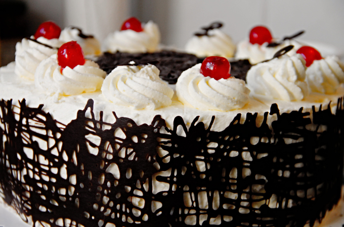

The origin of the Black Forest cake (Schwarzwälder Kirschtorte) is debated, but a widely accepted theory suggests it was created in the early 20th century in the Black Forest region of Baden-Württemberg, Germany.
The most popular claim attributes its invention to pastry chef Josef Keller, who worked at Café Ahrend in Bad Godesberg near Bonn. He reportedly developed the recipe in 1915, combining chocolate sponge cake, whipped cream, cherries, and cherry liqueur (Kirschwasser) to create this iconic dessert.